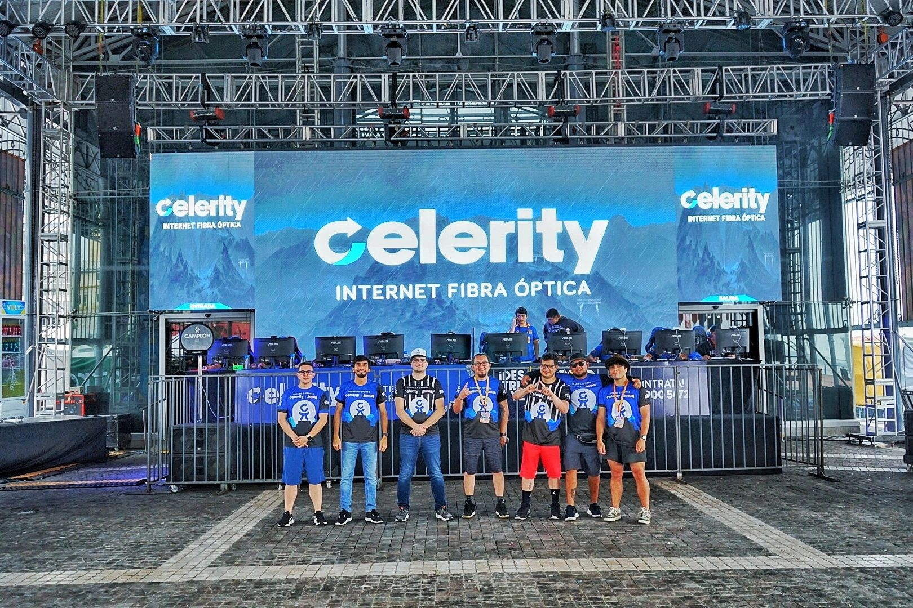
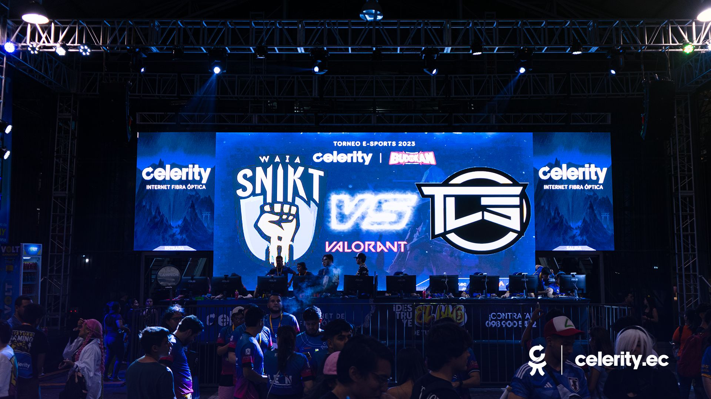
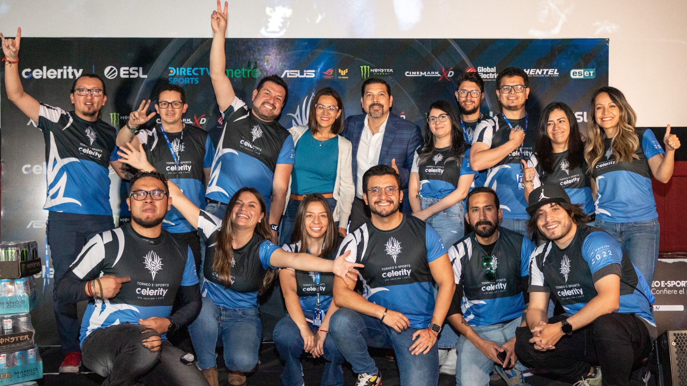
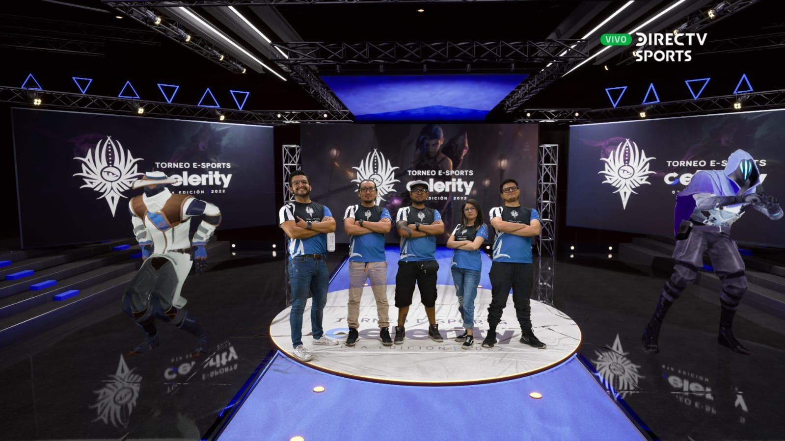
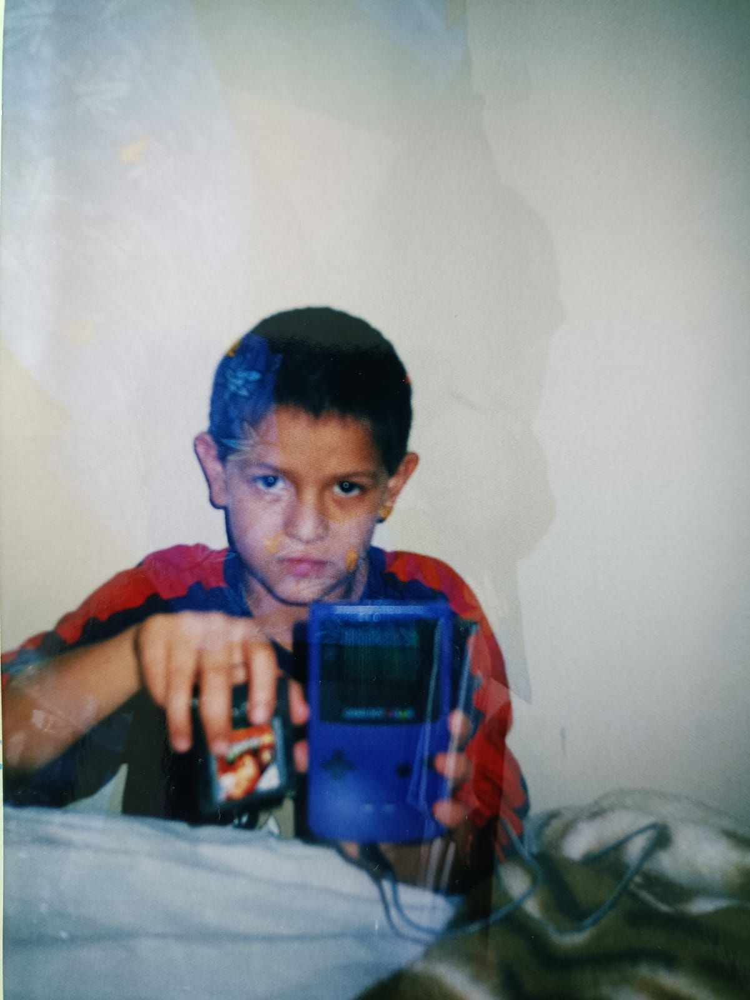
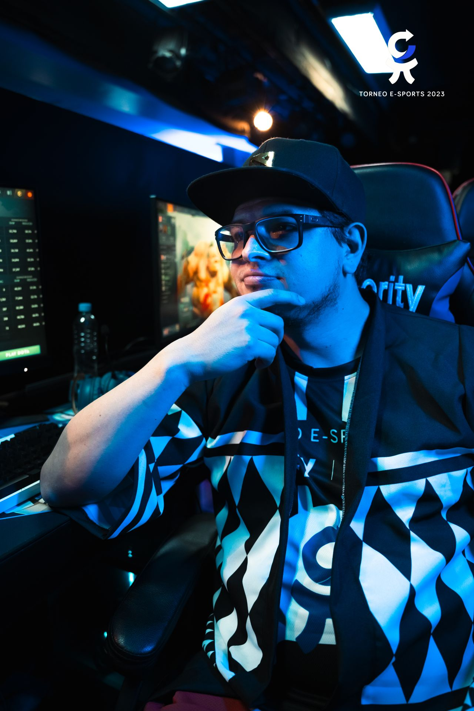

From Multimedia Intern to International Liaison: Scaling Ecuador's biggest tournament across 3 editions, 17,000+ viewers, and global partnerships.


It started with a Game Boy. Thousands of hours in Pokémon Yellow and Zelda: Ocarina of Time built my foundation, which eventually led to over 6,000 hours grinding in Dota 2. Long before professional esports was a mainstream conversation in Ecuador, I lived in the culture.
When I joined Puntonet (Celerity) as a multimedia design intern in late 2021, I stepped into a highly capable corporate marketing environment that was trying to scale an esports property — but they had a major blind spot: they didn't know how to speak to gamers. Without a native voice, corporate campaigns easily fall into forced, cringe gaming lingo that the community instantly rejects. Because I actually spoke the language of the trenches, my role quickly evolved from executing basic assets to acting as the cultural filter — ensuring our messaging, tone, and tournament execution felt completely authentic to the players.
I started where every intern starts — making promotional videos and flyers. But in a fast-moving tournament environment, things escalated quickly.
When the first edition launched, the tournament leader Byron Rodriguez knew Dota 2 was my obsession. He handed me a mic and asked me to cast. I stepped in front of a professional green-screen broadcast setup, leveraged my deep meta-knowledge, and never looked back. From there, each edition grew my responsibilities far beyond design:
An event of this scale doesn't happen in a vacuum. Nobody runs a national tournament alone. I was incredibly fortunate to work alongside an absolute powerhouse of a team at Puntonet.
We all worked sleepless tournament weekends to make this happen. I helped guide the strategy, but this team built the arena.



